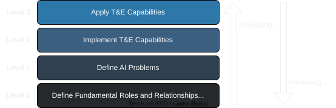
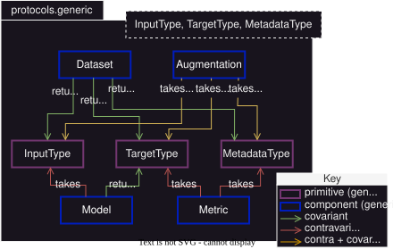
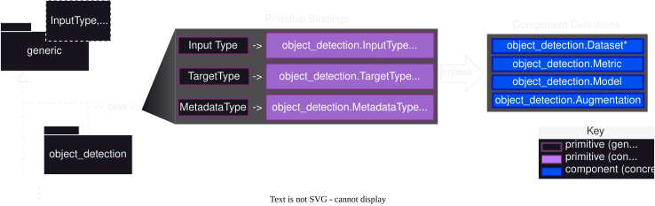
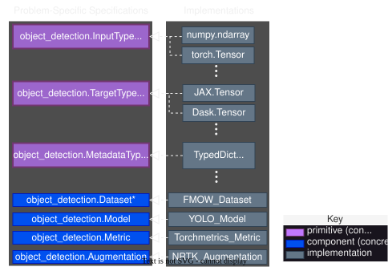

MAITE Layered Architecture#
MAITE provides an extensible test and evaluation (T&E) architecture organized into layers that each serve distinct purposes. This page explains how these layers are organized to enable interoperability and extensibility across AI problems.
In the remainder of this explainer, we make heavy use the terms “primitive”, “component”, and “task” according to the MAITE-specific definitions provided in Interoperable Object Concepts: “Components”, “Tasks”, and “Primitives”.
Overview#
MAITE’s architecture comprises four layers that build on one another.

MAITE’s Layered Architecture#
Four layers from fundamental definitions (Level 0) to concrete applications (Level 3).
This layered approach supports users at multiple levels while keeping the MAITE library extensible to new problem types and T&E capabilities. (See discussion of different MAITE user types is given in MAITE User Types. [1])
Level 0: Define Roles of Fundamental Primitives and Components#
The foundational layer defines fundamental roles and relationships between primitives and components in supervised AI/ML. This layer establishes the core abstractions that remain consistent across all AI problems. [2] The architecture is built on the observation that supervised AI problems almost always conform to the structure of a mapping between primitive types. By using generics, MAITE can define the type-blind relationships between primitives and components in a given problem.

Level 0: Primitive and Component Fundamental Roles#
Generic primitives (InputType, TargetType, MetadataType) and components
(Model, Metric, Augmentation, Dataset [6]) with their relationships.
Outcomes
Globally consistent component/primitive relationships: All AI problems use the same component structure, just with different concrete types.
Architectural openness to new AI problems: New problems can be added by defining new primitive types without modifying the core framework.
Facilitation of problem-agnostic utilities: Generic tasks like evaluation and prediction can work across multiple AI problems because they operate on the common component structure.
Level 1: Define AI Problems#
This layer specializes the generic primitives and components for specific AI problem types. An AI problem is defined by choosing concrete types for the three primitives and specifying behavioral expectations. [7]

Level 1: AI Problem Definition#
Specializing generic protocols for the object detection AI problem. [3]
The process of defining an AI problem in MAITE comprises 3 steps. [5]
Specify primitive types
MAITE uses a three-layer type alias system to separate what a type technically is (inherent type) from what it means in the domain (semantic alias) and where it appears in protocols (role alias):
Inherent Type → Semantic Alias → Role Alias Example -------- ArrayLike → Image → InputType (Python type) (domain meaning) (protocol position)
This convention allows the runtime type to be the best available fit from the Python language (e.g.,
ArrayLike), while docstrings on semantic and role aliases provide context-specific behavioral expectations for use within a particular AI problem.Why use multiple aliases for the same type?
A single underlying type like
ArrayLikecan represent many different domain concepts—an image, a bounding box, a segmentation mask, a feature vector. Each semantic alias captures different behavioral expectations through its docstring:Image: ArrayLike with shape (C, H, W), values in [0, 255] or [0, 1]SegmentationMask: ArrayLike with shape (H, W), integer class IDsImgClassification: ArrayLike with shape (Cl,), probability distribution
Role aliases (
InputType,TargetType,DatumMetadataType) then specify which semantic type occupies which position in generic protocols, making protocol signatures both generic and self-documenting.Example from image classification:
See image classification for a complete example. Key type definitions:
# Assuming inherent type of ArrayLike # Semantic alias (domain meaning) Image: TypeAlias = ArrayLike """Semantic alias for a single image datum. Expected shape semantics: (C, H, W)""" ImgClassification: TypeAlias = ArrayLike """Semantic alias for a classification target/prediction vector. Expected shape semantics: (Cl,) where Cl is number of classes""" # Role aliases (protocol positions) InputType: TypeAlias = Image """Role alias for model/dataset input in the image-classification protocol family.""" TargetType: TypeAlias = ImgClassification """Role alias for model/dataset target in the image-classification protocol family.""" DatumMetadataType: TypeAlias = DatumMetadata """Role alias for datum-level metadata in image-classification protocol signatures."""
When defining a new AI problem, specify:
InputType: What the model consumes (e.g., Image, Text, Audio)
TargetType: What the model predicts (e.g., ObjectDetectionTarget, Label, Transcript)
DatumMetadataType: Information for stratifying analysis, not provided to model
Parametrize generic component protocols
Parameterize the generic component protocols with the chosen primitive types:
# Generic protocol from Layer 0 from maite.protocols import generic as gen from maite.protocols import object_detection as od class Model(Protocol, Generic[InputT, TargetT]): def __call__(self, inputs: Sequence[InputT]) -> Sequence[TargetT]: ... # Specialized for object detection from maite.protocols import object_detection as od class Model(gen.Model[Image, od.ObjectDetectionTarget], Protocol): """Object detection model protocol""" ...
Explicitly document behavioral expectations on primitive semantic aliases
Specify semantic expectations on primitives in docstrings, especially those that cannot be enforced by a Python static type checker [7]—for example, image shape conventions (C, H, W), bounding box formats [x0, y0, x1, y1], coordinate systems (origin at top-left), or probability constraints (scores sum to 1.0). MAITE makes a practice of doing this at the class docstring level for transparency and consistency.
Example: Object Detection#
The object detection AI problem specializes:
InputType = Image:
ArrayLikewith shape (C, H, W)TargetType = ObjectDetectionTarget:
ObjectDetectionTargetwith boxes, labels, scores attributesMetadataType = DatumMetadata:
DatumMetadataTypedDict with required ‘id’ field
Components inherit these types:
Dataset: Provides (Image, ObjectDetectionTarget, DatumMetadata) tuplesModel: Maps Sequence[Image] → Sequence[ObjectDetectionTarget]Metric: Evaluates ObjectDetectionTarget predictions
Outcomes
AI problem specification: Structural types encoding behavioral expectations for components and primitives
Extensibility and interoperability: Over different primitive, component, and task implementations
Level 2: Implement T&E Capabilities#
This layer provides concrete implementations that satisfy the AI problem protocols defined in the preceding level. Implementations can come from MAITE itself [8], third-party libraries, or user code.

Level 2: T&E Capability Implementations#
Primitive Implementations#
Problem-specific primitive types are implemented using concrete structures:
- InputType (Image):
numpy.ndarray
torch.Tensor
jax.Array
dask.array.Array
Any
ArrayLiketype
- TargetType (ObjectDetectionTarget):
Custom classes implementing the protocol
Dataclasses with required attributes
Dictionaries satisfying structural requirements
- MetadataType (DatumMetadata):
TypedDict with optional extra fields
Plain dictionaries satisfying required structure
Component Implementations#
Concrete components satisfy the protocols through structural compatibility:
Datasets: COCO dataset wrappers, Torchvision datasets, custom dataset classes
Models: YOLO models, Faster R-CNN, custom detection models
Metrics: COCO metrics, precision/recall calculators, custom evaluators
Augmentations: Image transformations, data augmentation pipelines
Implementations need not explicitly inherit from MAITE protocols. They satisfy protocols through structural subtyping—having the required methods and attributes with compatible type signatures.
Outcomes
Concrete and interoperable component and task implementations that can be applied across applications within the same AI problem
Level 3: Apply T&E Capabilities#
The top layer represents concrete applications: using implemented components to perform test and evaluation tasks. This is where users compose components to generate predictions and evaluate models.
Applications at this layer have:
Rich problem context: Specific datasets, particular model architectures, concrete evaluation requirements
Concrete instantiations: Actual Python objects (not protocols or type variables)
Executable workflows: Running evaluation pipelines, generating predictions, computing metrics
# Level 3: Application code
from maite.protocols import object_detection as od
from maite.tasks import evaluate
# Concrete implementations
dataset = MyCOCODataset() # Satisfies od.Dataset
model = MyYOLOModel() # Satisfies od.Model
metric = MyCOCOMetric() # Satisfies od.Metric
# Apply T&E capability
results = evaluate(model, dataset, metric)
The three layers below (Levels 0-2) together form the complete foundation, with Level 3 representing any concrete application that composes these capabilities.
Outcomes
Application-level T&E results inform next steps in application-level MLOps process
Enables lower levels of MAITE architecture to selectively promote/adapt elements that would be useful in other applications. These could be in the same AI problem (corresponding to updates at layer 2) or more broad (corresponding to updates at layers 0 and/or 1).
Further Reading#
MAITE User Types - MAITE user types and how they interact with each layer
generic - Generic protocol API reference (Layer 0)
Vision for Interoperability in AI Test and Evaluation - Overall vision document